Exposing an OpenShift application to the Internet from a ‘private’ Satellite Cluster using a Load Balancer
Kevin Collins ( kevincollins@us.ibm.com )
Kunal Malhotra ( kunal.malhotra3@ibm.com )
Let's say you have deployed a RedHat OpenShift Cluster via IBM Cloud Satellite in a private isolated network in your datacenter and now you have deployed certain applications on this OpenShift Cluster which are required to be exposed to the public Internet. According to the current design the only way it is possible to expose the application to the public Internet is either you expose your whole satellite location to the Internet or use networking infrastructure such as (load balancer, http/https/TLS proxy etc.).
Exposing the whole satellite location brings up a huge security concern i.e. anybody from the outside world can access you satellite control plane in the datacenter or the OpenShift worker nodes themselves and this is not ideal for any enterprise. Hence using networking infrastructure make much more sense for both security and operational points to expose applications to the Internet. This involves having a networking device outside of the cluster and configuring the load balancer to access a NodePort service on your OpenShift Cluster. Not only will you find this method more secure, it also scales better. In tutorial we will show you how to NAT the traffic coming from the Internet to your internal private network via a load balancer so that your application is accessible via the internet.
Note: This step-by-step tutorial have been performed on IBM Cloud, but steps should be similar on other public cloud providers and on-prem.
Create a load balancer service with your cloud provider.
IBM Cloud Example:
From the IBM Cloud menu, navigate to VPC Infrastructure and under Network, select Load Balancers, and click Create.
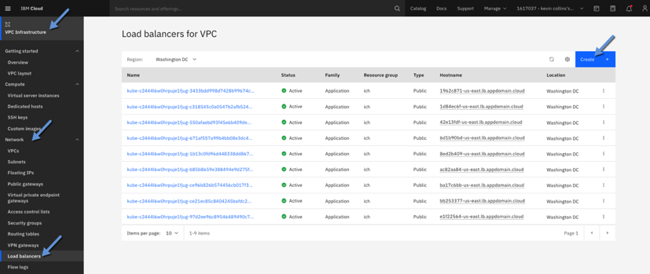
Configure the Load Balancer
Give the load balancer a name, select Application Load Balancer, select the Region where your satellite hosts are, select your virtual private cloud your hosts are in, and finally select all subnets for your VPC.
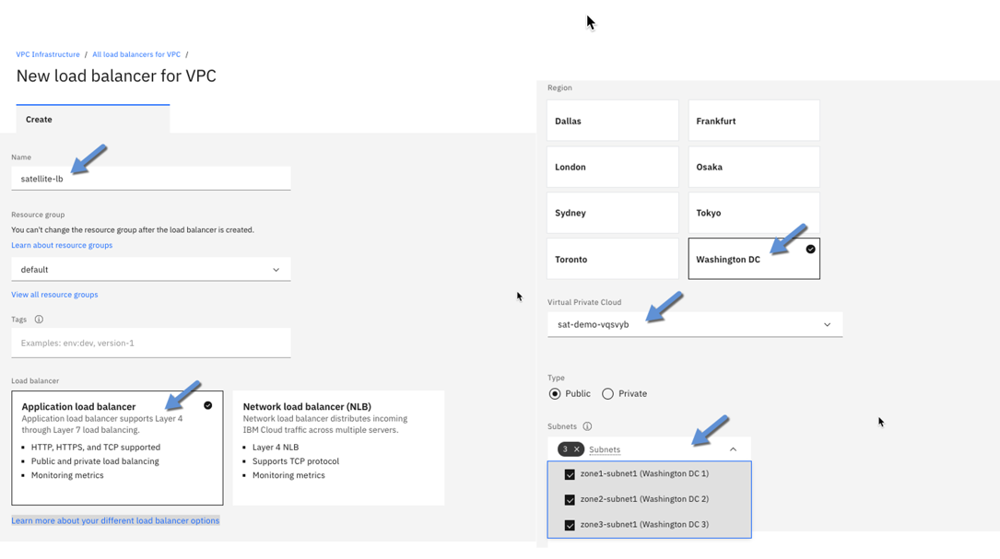
Create a backend pool
In OpenShift, get the nodeport of the service you want to expose to the Internet.
Example to Test:
Create a new openshift application
oc new-app openshift/hello-openshift
This creates a pod and a cluster ip service.
Edit the service, search for ClusterIP and change it to NodePort. Save the service.
oc edit svc hello-openshift
Note the port of the service.
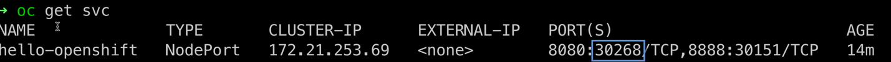
In this case, we want to create a load balancer for the service running on port 8080 which maps to port 30268 in the cluster.
Create a backend pool
Back on the create load balancer page, click on New Pool in the backend pool section.
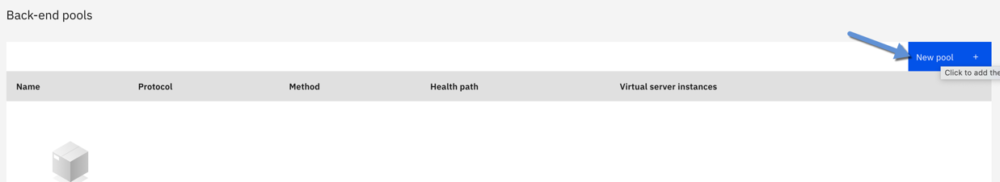
Following the above example, we will use the name hello-openshift and for Health Port, but the port number we got in the previous step ... in this case 30268.
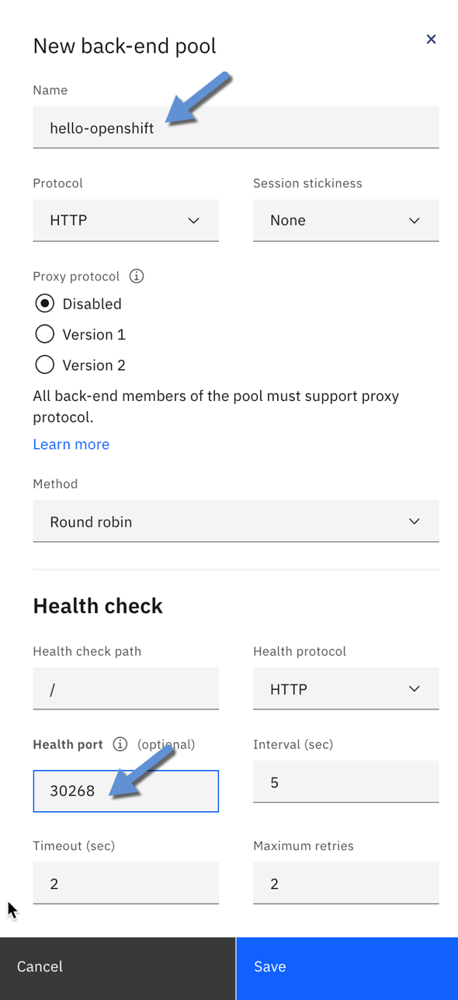
Attach Virtual Hosts to the Backend Pool.
Under the backend pool section, click on attach.
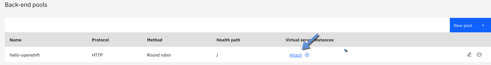
On the next screen select the first subnet, and then select the first worker node instance, and use the same port number ( 30268 in our case ). Click add and repeat the same steps for every subnet and every worker node in the cluster.
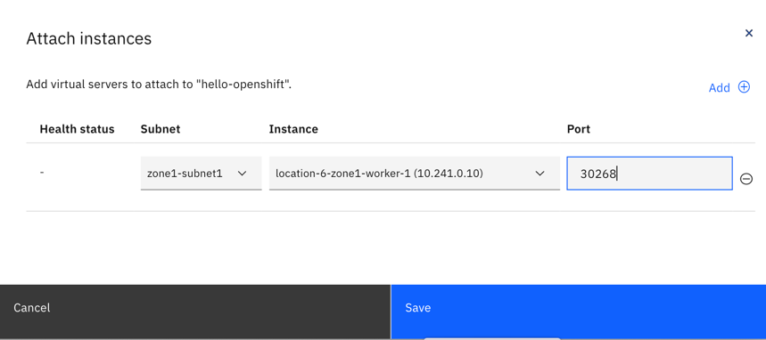
*Important note -- when you add or remove worker nodes in your cluster, will need to go back to this backend pool and either add the new worker node or remove it from this backend pool.
After entering all the worker nodes, they should all appear in attached instances.
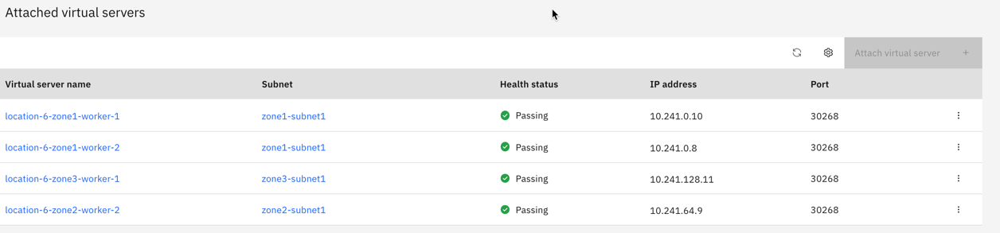
Create Front-end Listener
Under front-end listeners, click on New listener.
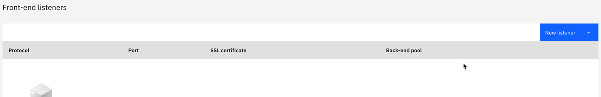
On the next screen, enter the node port from your service ( in the example above 30280 ), select your backend pool, and then enter 15000 as the maximum connections, and then click save.
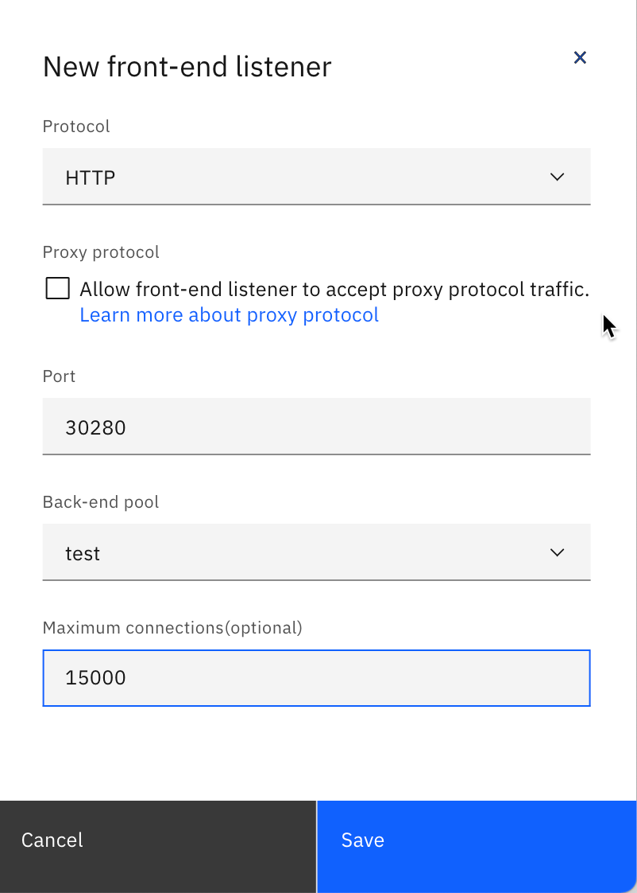
Create the load balancer
On the panel on the right hand side of the screen, click on Create Load Balancer.
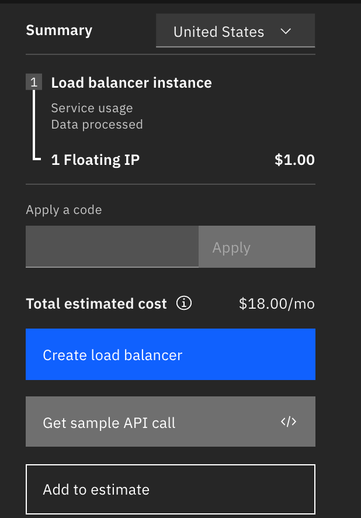
Get the load balancer host name
The load balancer will take a few minutes to create. After it is created, you can view the hostname from the overview page.
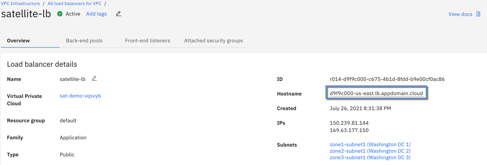
Test the load balancer
If you are following the example in this document, you can curl the hostname and it should tell you "Hello Openshift"
Note, it can take a couple of minutes for DNS to be updated. If you want to test right away run
host \<hostname\>
This will return 2 IPs, like below that you can then curl instead of the hostname if you want to test right away.
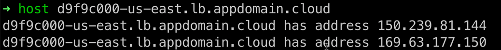